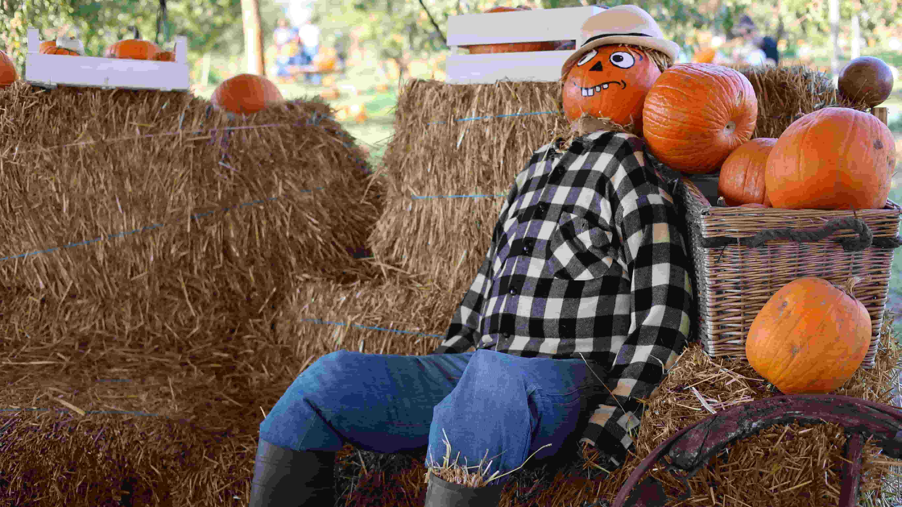
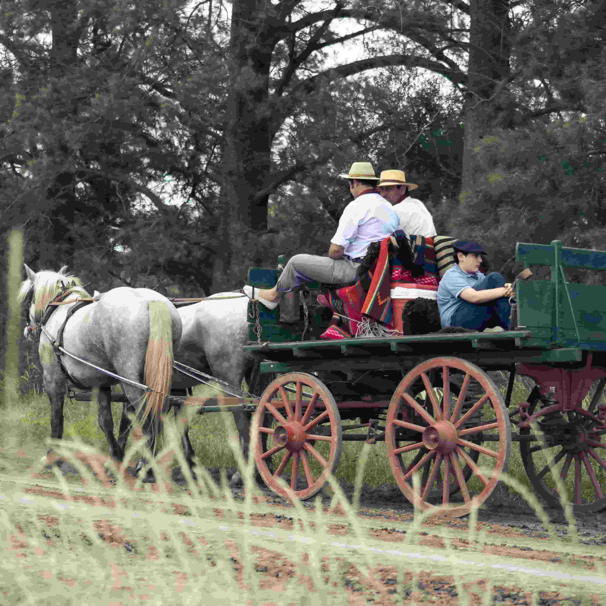
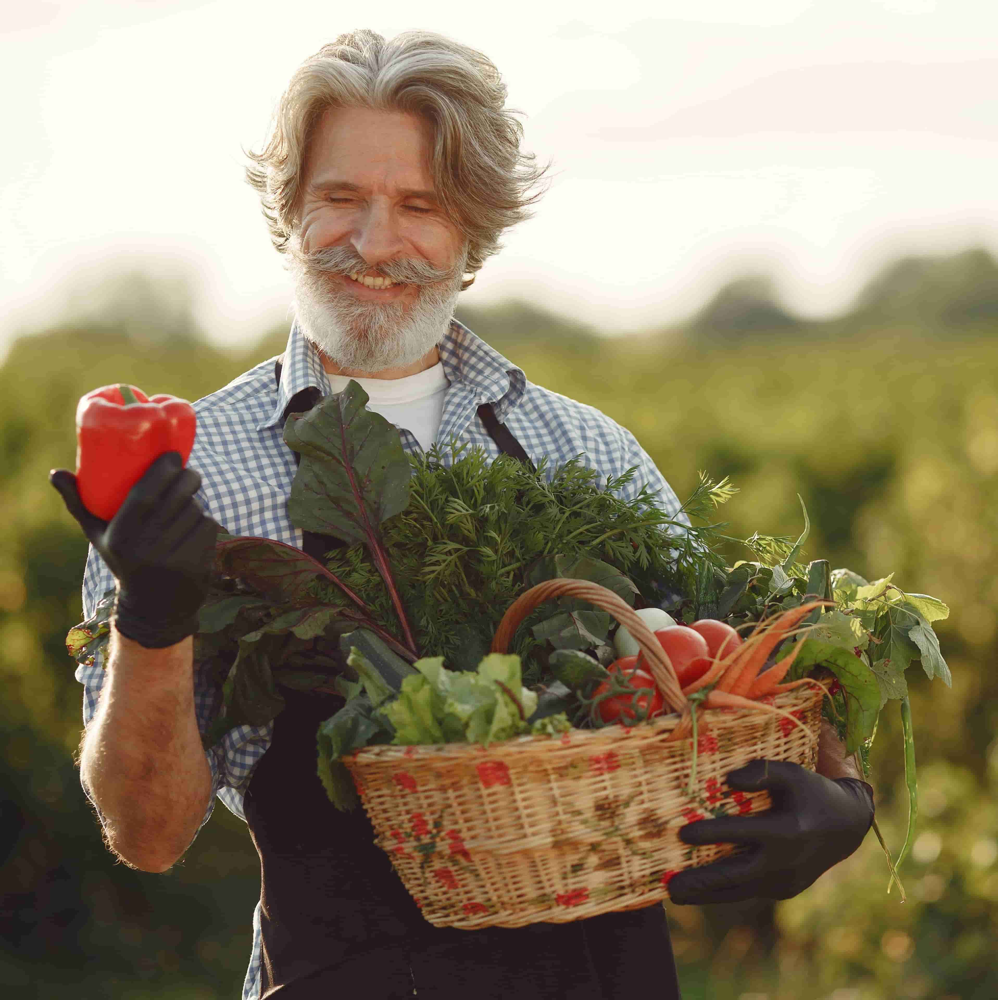

Farm Fun
There's plenty of fun for all ages at Abbington Farm Park. Visitors can enjoy a variety of seasonal attractions, including hayrides, pumpkin picking, and our popular corn maze. You can also meet the farm animals and learn about how they live, or get hands-on with traditional farm tools such as pitchforks and shovels. Whether you're exploring the farm or taking part in activities, there's always something new to discover.
 |
HayridesEnjoy a relaxing tour of the farm on our traditional horse-drawn hayride. Take in the countryside views and learn more about life on the farm. Along the way, you'll have the chance to see our animals in their surroundings. |
Corn MazePut your sense of direction to the test in our exciting corn maze. Perfect for families and friends, it's a fun challenge for visitors of all ages. |
 |
 |
Farmer for a DayStep into the boots of a farmer and experience hands-on farm activities. Try using traditional farm tools and learn how they are used around the farm. Pick your own fresh fruit and vegetables to take home and enjoy. |